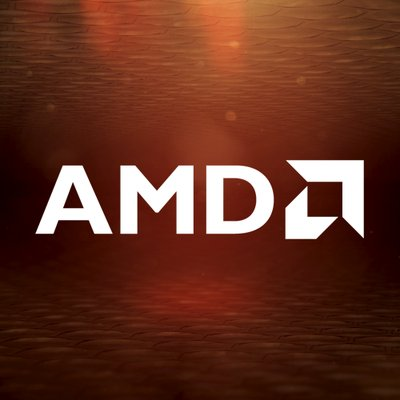
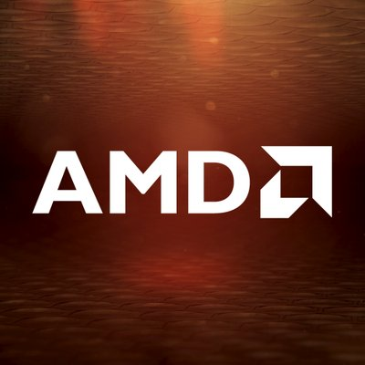

Bővítőkártyás rendszer
A bővítőkártyás rendszer azt jelenti hogy a meglevő integrált videókártya mellé egy külső videókártyát tudunk csatolni amely nagyobb erőt biztosit a külömböző grafikus munkák elvégzésében vagy krypto bányaszatál ahol van hogy több tiz egybekötött videókártyát használnak, vagy csak videójátékok futtatására használják.
Több videokártya hídba kötése
Néhány videokártyát össze lehet kötni egy másikkal, így sokkal nagyobb teljesítményt adnak. Ehhez a következők kellenek:
-nagy kapacitású, jó minőségű tápegység (minimum 500 watt)
 
